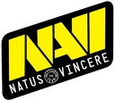
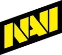

Suis Natus Vincere, sans rien rater
Ajoute Natus Vincere à tes équipes : eSportly te prévient avant chaque match, affiche le score en direct sur ton écran verrouillé et cache les résultats si tu regardes en différé.
Tester la bêta sur iPhone Site officiel de Natus VincereLes équipes Natus Vincere dans eSportly
- Natus VincereDota 2

Natus VincereCounter-Strike 2 Natus VincereValorant
Natus VincereValorant
Fiche
- Jeux
- Counter-Strike 2, Dota 2, Valorant
- Pays
- Ukraine
- Site officiel
- navi.gg
- Fiche mise à jour
- 2026-10-21
Prochains matchs
- Eternal Fire – Natus VincereValorant · Project Blender · Phase 2 2026
- Blezz – Natus VincereValorant · Project Blender · Phase 2 2026
- G2 – Natus VincereCounter-Strike 2 · PGL Masters · Bucharest 2026
- Natus Vincere – Team FalconsCounter-Strike 2 · IEM · Beijing 2026
heure de Paris
Derniers résultats
Les scores restent cachés : touche un match pour voir le sien.
Team George – Natus Vinceremercredi 21 octobre · Valorant · Project Blender · Phase 2 2026Voir le score
Team George 0 – 2 Natus Vincere
Ses matchs dans ton calendrier
Abonne-toi au calendrier de Natus Vincere : chaque match apparaît dans l'app Calendrier de ton iPhone, de ton Mac ou dans Google Agenda, et se met à jour tout seul (heure changée, match ajouté). Sans compte, sans e-mail.
Autre application : copie cette adresse et ajoute-la « par URL » :https://lmavqchwevcvvneblqld.supabase.co/functions/v1/calendrier/equipe/natus-vincere.ics
Partager cette page
Sur ton site
Tu as un site ou un blog de fans ? Colle ce code : les 3 prochains matchs de Natus Vincere s'afficheront, à jour chaque matin.
<iframe src="https://esportly.protojo.fr/widget/fr/natus-vincere.html" title="Natus Vincere – eSportly" width="360" height="340" style="border:0;border-radius:16px" loading="lazy"></iframe>Questions
- Comment être prévenu avant les matchs de Natus Vincere ?
- Installe eSportly et suis Natus Vincere : une alerte arrive avant chaque match (Counter-Strike 2, Dota 2, Valorant), au coup d'envoi et au résultat. C'est gratuit et sans compte.
- Comment mettre les matchs de Natus Vincere dans mon calendrier ?
- Touche « Ajouter à mon calendrier » sur cette page : les matchs apparaissent dans l'app Calendrier et se mettent à jour tout seuls. Ça marche aussi avec Google Agenda.
- Où regarder les matchs de Natus Vincere en direct ?
- Quand le match est diffusé sur Twitch, YouTube ou Kick, eSportly affiche le direct dans la fiche du match, seulement si tu le lances.
Ce que tu reçois
- Une alerte 1 heure et 30 minutes avant chaque match, au coup d'envoi et au résultat.
- Le score en direct sur l'écran verrouillé, mis à jour à chaque manche.
- La fiche de l'équipe à ses couleurs dès l'ouverture de l'app.
- Sans spoiler : les scores restent cachés jusqu'à ce que tu veuilles les voir.